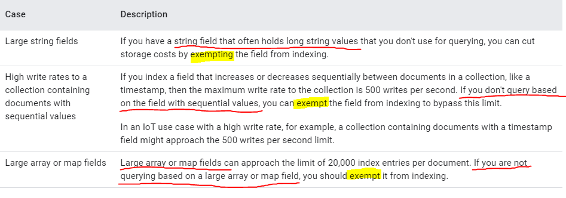

Firestore Introduction
What is Firestore?
Cloud firestore is a document-model database that stores the data in a tree like structure and everything is placed into documents and collections.
It also offers seamless integration with other firebase products, including Cloud Functions.
- Data is stored hierarchically
- Shallow Queries
- Allow Composite Indexes
- Sever side Development
- Indexes
Indexes
Cloud Firestore makes use of indexes for us to rapidly query items, which doesn't need to crawl through the contens item by item.
Indexes guarantees high query performance by using indexes for all queries.
1. Single-field indexes vs Composite indexes
Example (Single-field indexes): firestore.collection(countries).where("capital", "desc");
Example (Composite indexes): firestore.collection(countries).where("capital", "desc").orderBy("population", "asc");
⭐Cloud firestore automatically implement Single-field indexes for collection-scope, the indexes are created by default:
- Non-array && Non-map field - desc && asc
- Map field's Non-array && Non-map field - desc && asc
- Array field - array-contains
2. Collection Scope vs Collection Group Scope
⭐Cloud Firestore default indexes are set around Collection Scope, which means we can use the indexes to query / order data within the same collection.
⭐Collection Group Scope is the scope that across different collections (mostly subcollections) that with the same Id.
3. Indexes best practice
For most apps, you can rely on automatic indexing and the error message links to manage your indexes. However, you may want to add single-field exemptions in the following cases:
